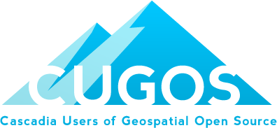

What is CCUGOS?
The Cascadia chapter of the OSGeo is based on a regional FOSS GIS user group formed in 2007 called Cascadia Users of Geospatial Open Source (CUGOS). We are an active group of members who are passionate about open source software, GIS, and our region. We have members from all walks of life, a large spectrum of business and academia, and active OSGeo members (board members, charter members, and active project participants).
We are passionate about open source software, GIS, and our region.

Usermap (Points to come!)
This map shows the location of CUGOS members throughout the region. It’s also an example of the kind of application you can easily create using only free, open source technologies!
Projects
CUGOS tries to maintain active Geo-Spatial projects to help engage the community, sharpen our skills, and provide unique hands on learning. Listed below are some of the currently active projects sponsored by CUGOS:
Roadflaw

The purpose of roadflaw.com is to provide Seattle, WA area residents with a web application to comment on transportation issues.Issues can be any problem from a pot hole to a bridge that needs to be constructed. The secondary purpose of this project is to provide a learning experience for technology enthusiasts to practice their skills with mapping, and web applications. This project will be built over the course of many weekends and when people feel like contributing.
Mailing List
Visit the CUGOS Google Groups page to sign up for the mailing list!
Meetings
Be sure to attend one of our monthly meetings as well. We meet at offices of LizardTech in downtown Seattle on the 3rd Wednesday of every month at 6pm.
Events
-
Library Meeting
http://www.seattle.com/
Mission
The OSGeo Cascadia Chapter strives to provide support for local users of Open Source Geospatial software, and to promote the goals and projects of the Open Source Geospatial Foundation. The Chapter is focused on the Pacific Northwest region of the United States as well as Southern British Columbia. The group hosts meetings providing networking, support and educational opportunities to the local members.
History
Started in February 2007, CUGOS has quickly grown from a core of three founders to a mailing list of over 100 active members. Loosely based on the FRUGOS group, we have held monthly meetings since inception and are active in local, regional and international FOSS GIS activities. In its second year the group has started to branch out into other activities such as hosting code sprints and actively working toward hosting a regional FOSS4G mini-conference.